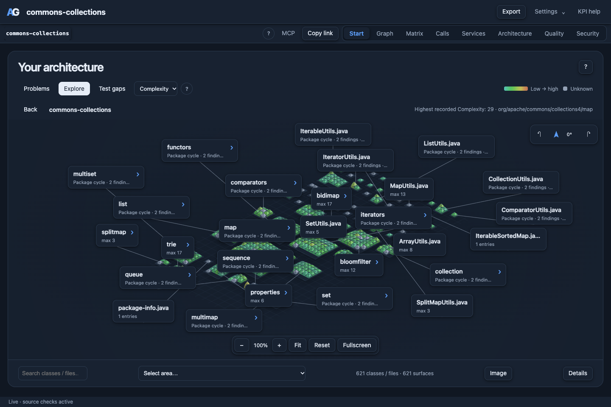

Start with the code.
Open a project without writing a configuration file. Explore package imports, files and supported service connections.
Explore dependencies. Follow cycles. Find the source behind a connection. Architecture analysis for your terminal, browser and coding agent.
Explore your projectOpen a project without writing a configuration file. Explore package imports, files and supported service connections.
Inspect source references and cycle groups. Keep declared dependencies separate from observed runtime calls.
Add architecture rules, check them in CI, or ask your coding agent to investigate through the MCP server.
World View draws every class as a surface inside its package. Choose a metric and the surfaces take its colour; each label shows the highest value inside.

Surfaces are coloured from low to high by the maximum cyclomatic complexity of their methods. The status line names the highest recorded value: 29, in the map package.
Grey means not measured. Class metrics come from compiler-backed analysis (for Java, a JDK). Classes it could not cover stay grey as unknown instead of showing zero. RFC, DIT and NOC are available in the same metric selector; Tools & prerequisites lists what each language needs.
Move from the big picture to a specific relationship. Each view answers a different architecture question.

Explore package dependencies in their tree structure. Select a package to focus its relationships and inspect the supporting source references.
Start with the included service demo, then explore a larger open-source library and a real microservice system. Run these commands from the ArchGuard repository.
“Why do these services depend on each other?”
A deliberately coupled shop across three Compose stacks. Follow the catalog → pricing → promotions cycle or investigate orders → payments → risk.
archguard serve examples/service-shop --port 8789Open http://127.0.0.1:8789/ and choose Services. No containers required. Configured HTTP and startup dependencies are separate evidence.
“Where do packages become tightly coupled?”
Inspect a Java library through its graph, World View and tree matrix. Expand packages, focus a cycle, and trace imports back to source files.
archguard --config examples/commons-collections.toml \
serve examples/checkouts/commons-collections \
--port 8788 --depth 4Clone the example first using the walkthrough below. Import analysis works without building the library; compiler-backed metrics need a suitable JDK.
Setup & walkthrough“Can event-driven services form a cycle?”
Catalog API and Payment Processor both exchange events with Ordering API. Follow the inferred cycle group, inspect publishers and subscribers, then open a service's packages and classes.
archguard serve examples/checkouts/eshop --port 8793Static event-name matching over shared RabbitMQ configuration. These are candidate routes, not observed runtime traffic.
Setup, cycle & source evidence
Use the viewer to explore, the CLI to automate, and MCP to let a coding agent query the same analysis.
archguard mcp --root /path/to/projectRegister this command as a stdio MCP server in your agent client.
“Show me the largest dependency cycle and the source references that establish it.”
“Which services call orders, and is that connection configured or observed?”
“Explain the architecture findings in this change before suggesting a fix.”
Answers depend on the available source, configuration and imported evidence.
Import graphs work out of the box. Richer class, method and call analysis uses the language's own tooling where supported.
| Language | Import graph | Additional analysis | Tools for additional analysis |
|---|---|---|---|
| Java | Included | Types, methods, calls and supported metrics | JDK 17+ and the project classpath |
| C# | Included | Types, methods, calls and supported metrics | .NET SDK 8+ and restored packages |
| TypeScript / JavaScript | Included | Types, calls and supported metrics | Node.js and the project's TypeScript compiler |
| Go | Included | Packages, types, methods, functions and source metrics | Go SDK |
| Rust | Included | Per-function complexity and Halstead metrics from syntax | None |
| Python / PHP | Included | Import-graph analysis | None |
Missing evidence is not a zero. Dynamic calls, generated code and unavailable dependencies can leave gaps. Coverage, runtime activity and other imported measurements require actual reports. A static graph does not prove the complete runtime architecture. What to install for each language, framework and report ↗
Build ArchGuard from a repository checkout with a Rust toolchain, then point it at your project.
Source on GitHub# From the ArchGuard repository
cargo install --path crates/archguard-cli --locked
# Open the local viewer
archguard serve /path/to/project --port 8787
# Check architecture in your terminal or CI
archguard check /path/to/projectViewer: http://127.0.0.1:8787/
Rules and detected violations determine the check result.
Install ArchGuard, choose your source scope and explore the viewer.
FOLLOW THE EVIDENCETrace HTTP and event relationships, inspect evidence and zoom into a service.
ASK YOUR AGENTConnect your coding agent and start with natural-language investigation prompts.